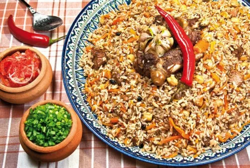

Плов
 1 час 30 минут
1 час 30 минут
6-8 порций
500-600 калорий
Плов — это традиционное блюдо среднеазиатской и кавказской кухонь, представляющее собой рис, приготовленный с мясом и овощами. Это блюдо имеет насыщенный вкус и аромат благодаря использованию различных специй.
Ингредиенты
- Для плова:
- 500 г баранины или говядины
- 3 стакана длиннозерного риса
- 2 большие луковицы
- 7 средние моркови
- 1 головка чеснока
- 1/2 стакана растительного масла
- 2 ч. ложки зиры
- 1 ч. ложка куркумы
- Соль и перец по вкусу
- 6 стаканов горячей воды или бульона
- Для подачи:
- Свежая зелень (кинза, петрушка)
- Гранат (по желанию)
Приготовление
- Подготовка ингредиентов:
- Мясо нарезать кусочками среднего размера, посолить и поперчить.
- Лук нарезать полукольцами, морковь натереть на крупной терке.
- Рис промыть несколько раз до прозрачной воды.
- Приготовление зирвака:
- В большой казане или глубокой сковороде разогреть растительное масло.
- Обжарить мясо до золотистой корочки, затем вынуть его из казана.
- В том же масле обжарить лук до золотистого цвета.
- Добавить морковь и жарить до мягкости.
- Вернуть мясо в казан, добавить специи (зиру, куркуму, паприку) и перемешать.
- Приготовление риса:
- Выложить рис поверх зирвака, разровнять его, чтобы он был покрыт жидкостью.
- Влить горячую воду или бульон, чтобы она покрывала рис на 2-3 см.
- Довести до кипения, затем уменьшить огонь до минимума, накрыть крышкой и варить 20-25 минут.
- Головку чеснока разрезать пополам и положить сверху на рис для аромата.
- Завершение приготовления:
- После того как рис впитает всю воду, снять казан с огня и дать плову настояться под крышкой еще 10-15 минут.
- Перед подачей перемешать плов, украсить свежей зеленью и гранатом (по желанию).